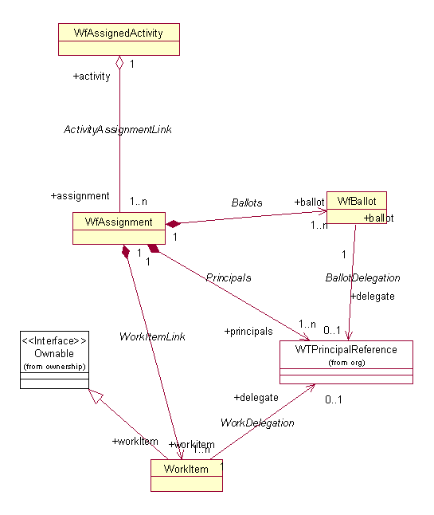

See: Description
| Interface | Description |
|---|---|
| WorkflowService |
WorkflowService provides client invokable methods to workflow services.
|
| WorkflowServiceSvr |
Supported API: true Extendable: false |
| Class | Description |
|---|---|
| _WfBallot | |
| _WfCompletionType | |
| _WfDistributionType | |
| _WfTallyType | |
| StandardWorkflowService |
Standard implementation of the workflow service interfaces
|
| WfBallot |
These are the ballots objects used in assigned activities.
|
| WfCompletionType |
Holds Completion type enumerations
Supported API: true Extendable: false |
| WfDistributionType |
Holds Distribution type enumerations
Supported API: true Extendable: false |
| WfTally |
Public static class to abstract heinous tally expressions.
|
| WfTallyType |
Holds tally type enumerations
Supported API: true Extendable: false |
| WorkflowHelper |
WorkflowHelper provides client invokable methods to workflow services.
|
| WorkflowServerHelper |
Supported API: true Extendable: false |
| WorkProcessorService |
When executed from a class that extends BasicTemplateProcessor, these
script call can be invoked by using the 'useProcessorService service
= ' html template entry.
|
| WTRolePermission |
Supported API: true Extendable: false |
The workflow work package contains classes that are responsible for managing the work assigned to individual users. The activity�s work may be assigned to one or more resources. These assignees can be declared to be required or optional.� This relationship is modeled by the association between the WfAssignedActivity and the WfAssignment class. These two classes, along with the WorkItem and WfBallot classes, provide for parallel work item distribution and completion by the assignees, and for decision-based event propagation based on the tallied results of the completed work.
WfActivity inherits many attributes and behaviors from the WfExecutionObject, including name, description, and input/output data (�context� attribute). A WfAssignment has a status (which is not a WfState) and is not directly associated with a context. Instead, it inherits the context from the WfActivity to which it belongs. A WfAssignment maintains a set of ballots (Wfballot) that captures dispositions made by assignees. These ballots can then be used to tally the votes based on a voting policy to determine what routing events should fire when the activity is completed. Both WfAssignedActivity and WfAssignment have a trip counter attribute that is used to manage information generated as a result of loop iterations.

Workflow Work package